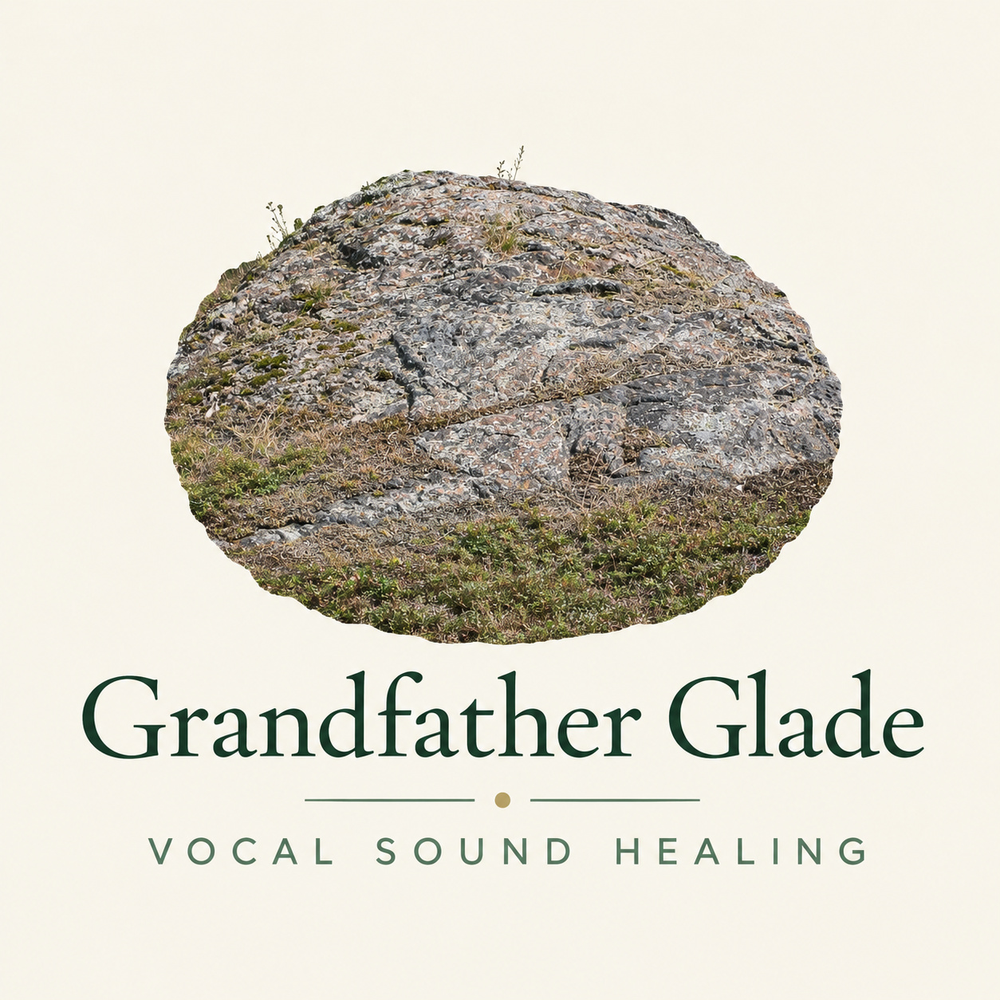

Coleen is a vocal sound healing practitioner, meditation facilitator, and spiritual guidance companion based at Grandfather Glade on Algonquin Territory which is now known as the Canadian Mississippi watershed in Ontario. Her practice draws on thirty years of Coaching and counselling as a mental health nurse — work grounded in deep listening, presence, and the integration of mind,body and Spirit — alongside over two decades of study and leadership in contemplative traditions including Traditional Sufi practice, Algonquin drum and song medicine, and a Cantorial family lineage that has carried sacred song and healing vibration across generations. She holds a Vocal Sound Healing Diploma from the International Academy of Sound Healing, and facilitation credentials in Mindfulness-Based Stress Reduction through the Ottawa Mindfulness Clinic.
Grandfather Glade — Vocal Sound Healing offers individual and group sessions and retreats rooted in the understanding that Presence and the human voice are both instrument and medicine. Working from a forested glade beside ancient Precambrian granite, Coleen brings together clinical experience, contemplative depth, and the lived knowledge of song as a pathway to healing. Whether you come carrying grief, confusion, exhaustion, a longing for clarity, or simply curiosity about your own voice,all are welcome here.
Contact Info: coleensimpson@live.com
Testimonial:
"I have had the honour of receiving immersive healing from Coleen during a time of profound grief in my life. During our private time, I found her to be fully attuned to my specific needs. I am grateful for my time with her on her beautiful lands and would highly recommend her retreats."
Sandy Kellerman
"For any aspect of healing to be effective, the healer must have the purest of intentions as possible. Coleen radiates just such a quality of intention and just to be in her presence, in itself is of profound benefit. It is of great fortune and blessing to receive any mode of healing from her. I personally have taken her retreats where I received her radiance, wisdom and loving healing kindness. I trust her with all my being, so completely. I give honour to her, referring to her as a heart friend as an expression of gratitude. I whole heatedly recommend her to anyone seeking authentic healing, comfort and ease."
Linda Marie Pacheco RN, CHPCN(C)
"I feel fortunate to have experienced the depth of inner exploration and healing through the retreat process offered by Coleen. I was attentively held and guided through this process of healing through attunement to and resonance with the wisdom of the source of being. Coleen draws from a depth of experience, wisdom teaching, and compassion synthesized within her training and experience in Sufi mysticism, Earth-based wisdom, and psychological healing modalities. I recommend without reservation this deep dive for all who look for healing and wisdom within their own being"
James Shuffield M.D.